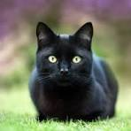

Ache o Gato
O seu objetivo desses jogo é achar o gato que esta perdido pela casa
Boa Sorte !!!
Entrada

vc esta na entrada da casa, por onde vc vai começar a procurar?
Sala de Jantar
Depois de entrar na sala de Jantar,
você viu que ele não esta aqui,
então para onde irá seguir
Cozinha
Depois de entrar na Cozinha,
você procurou ele em todos,
os cantos, e viu que ele não está
então para onde irá seguir
Jardim

Você resolveu ir para o lado
de fora da casa, só que o
gato não esta aqui, para onde mais
você vai procurar?
Sala social
Depois da sala de Jantar você
entrou direto em uma Sala Social
e ainda não achou o Gato. Qual
o proximo lugar?
Corredor
Depois de passar aqui vc deu da cara
com duas portas qual você deve entrar?
Lavanderia
Você chegou ao fim da busca
Não conseguiu achar o Gato
Banheiro
Você chegou ao fim da busca
Não conseguiu achar o Gato
Varanda
Apos entrar na varanda viu que tinha
apenas um caminho a seguir.
Corredor
Depois de passar aqui vc deu da cara
com duas portas qual você deve entrar?
Suite
Apos entrar e revirar a suite viu que ele
só poderia estao em um lugar. Seu Closed
Quarto
Apos entrar e revirar seu Quarto viu que ele
só poderia estao em um lugar. Seu Closed
Closed
Entrando no Closed você viu seu Gato.
Dormindo como um anjo
Fim
Parabens vc achou o Gato